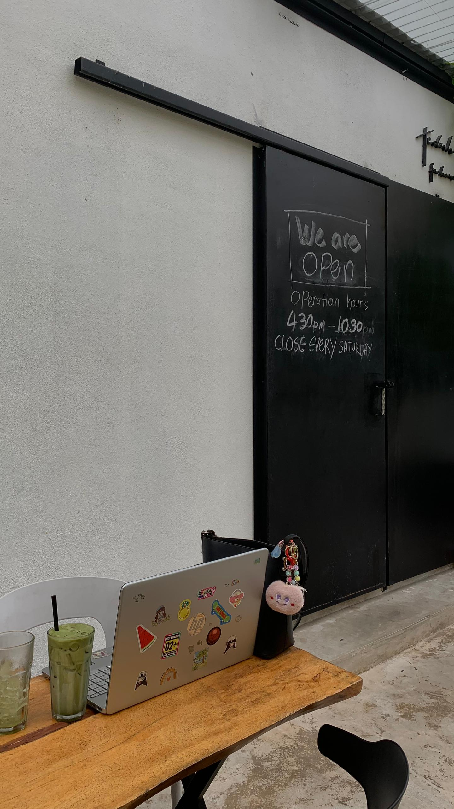
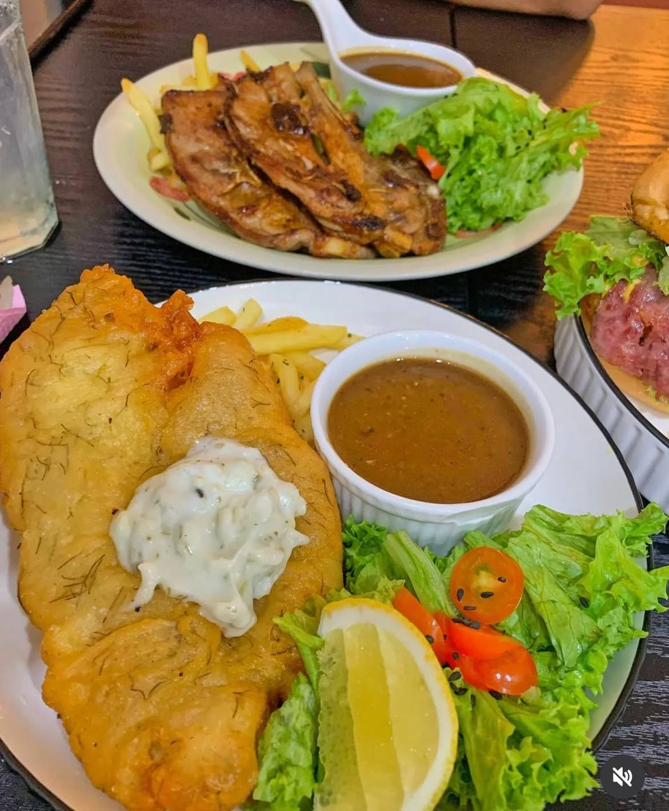
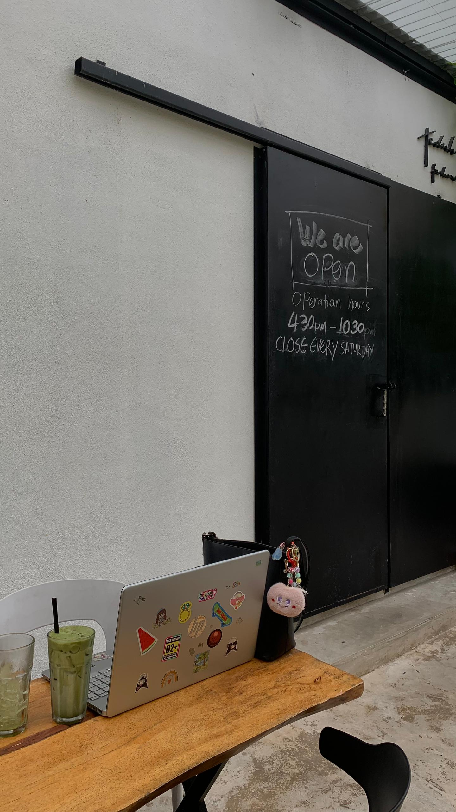
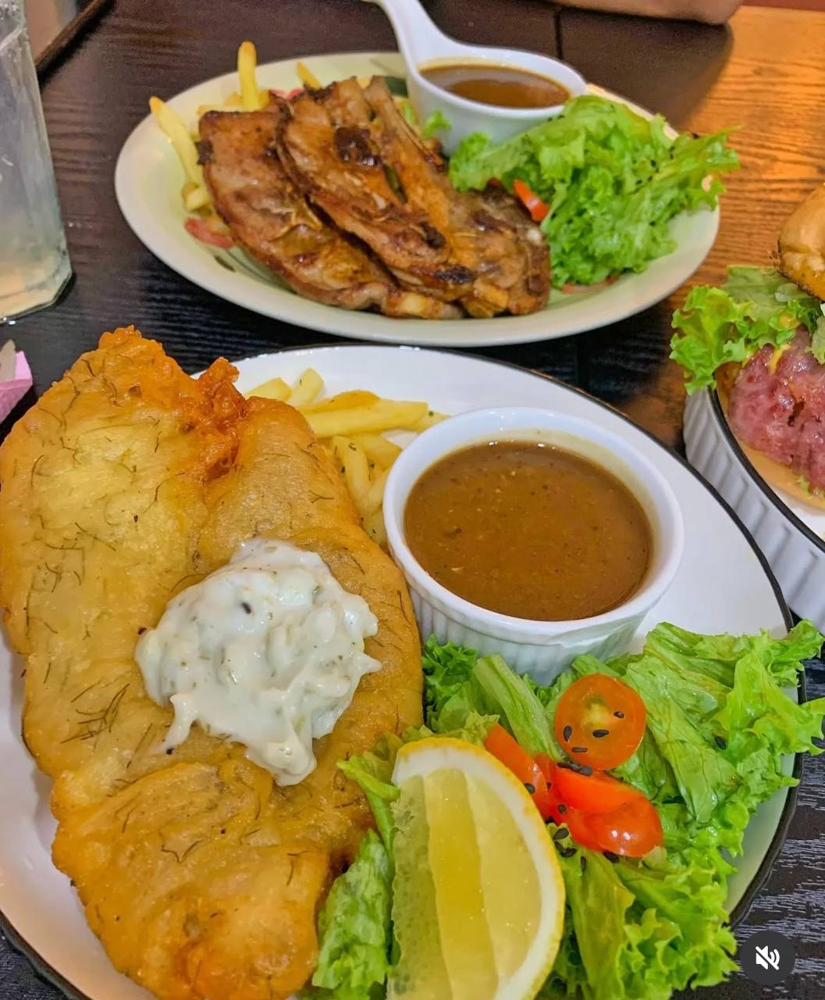
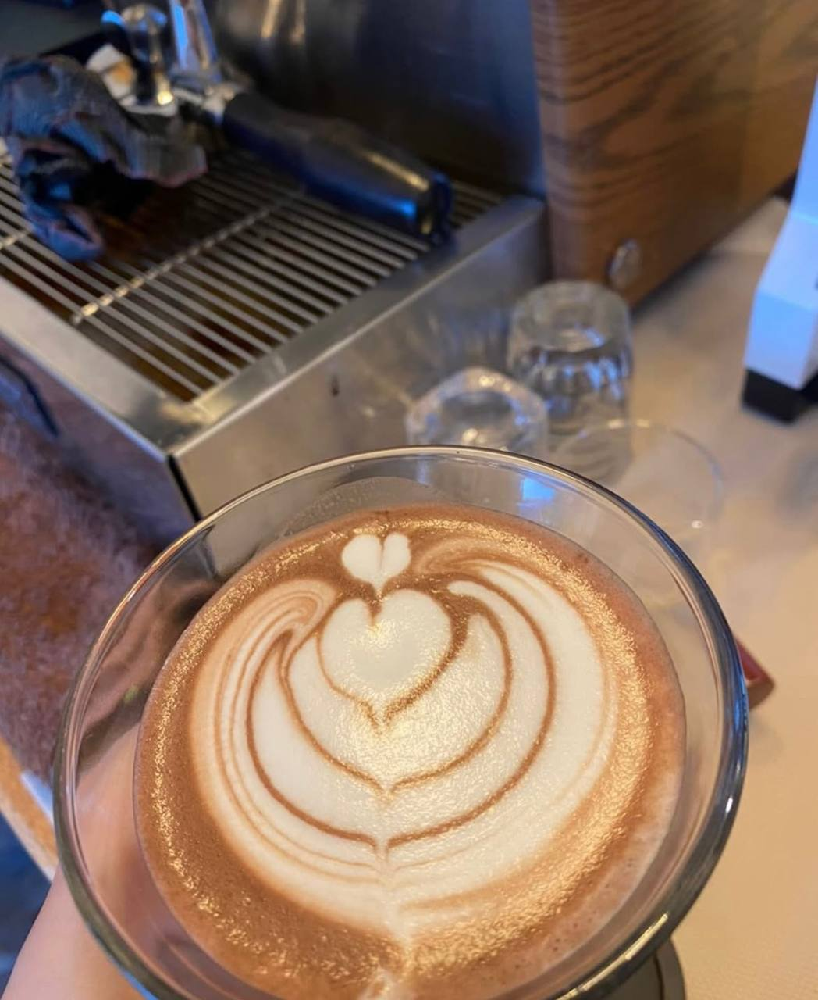
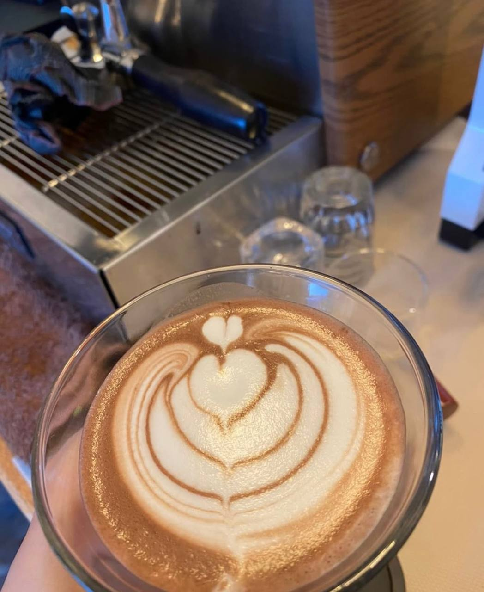

˚ ༘⋆ ✧ ABOUT US ✧˚ ༘ ⋆
 



 


「 ✦ THE HISTORY OF TEDUH BY FARHOUS CAFE ✦ 」
Teduh by Far Haus Cafe, located in Kemaman, Terengganu, was founded by Mr. Mazri Bin Mahussein with the vision of creating a cozy and welcoming dining space. The journey began in 2015, when he first started operating the cafe from home, serving a small but dedicated customer base. As the cafe gained popularity, he took a major step forward in 2020 by successfully opening a more aesthetic and inviting cafe, offering an enhanced dining experience in a beautifully designed setting.
Situated slightly off the main road, with a small sign leading visitors down a gravel path, Far Haus Cafe provides a peaceful environment surrounded by nature. Designed with simplicity in mind, the interior features a minimalist yet warm atmosphere, making it an inviting place for people to gather, work, or relax. The menu offers a variety of Western dishes, including Aglio Olio and Fish and Chips, as well as desserts like chocolate moist cake. The cafe also serves aromatic coffee options, such as Americano and Affogato, catering to coffee enthusiasts who appreciate high-quality brews.
Over the years, Teduh by Far Haus Cafe has gained a positive reputation for its well-prepared dishes and thoughtful customer experience. Visitors often praise the quality of the food, the comfortable environment, and the attention to detail in both service and presentation. The cafe also incorporates thoughtful decor elements, including motivational quotes, to create a relaxing and inspiring atmosphere.
Today, Teduh by Far Haus Cafe continues to be a preferred spot in Kemaman, offering a combination of good food, quality coffee, and a comfortable setting for locals and visitors alike.
The Mission
"To create a serene and inviting space where every cup of coffee tells a story, every dish nourishes the soul, and every moment inspires meaningful connections. We are committed to offering exceptional service, ethically sourced ingredients, and an atmosphere that feels like home."
The Vision
"To be the go-to haven for coffee lovers and food enthusiasts in our community, known for fostering a sense of belonging, sustainability, and innovation, while redefining the cafe experience for generations to come."
The Owner of Teduh by Far Haus Cafe
Mr. Mazri bin Mahussein
Mazri Bin Mahussein, the owner of Teduh by Far Haus Cafe, was born at Hospital Kemaman, Terengganu, and currently resides in Chukai, Kemaman. At 38 years old, he is the sixth of seven siblings. Married with one child, Mr. Mazri has always had a strong passion for food and hospitality, which led him to establish Teduh by Far Haus Cafe.
His vision was to create a comfortable and welcoming space where people could enjoy high-quality food, great coffee, and a relaxing ambiance. Under his leadership, the cafe has gained a reputation for its well-crafted dishes, thoughtful service, and inviting atmosphere, making it a favorite spot for locals and visitors in Kemaman.